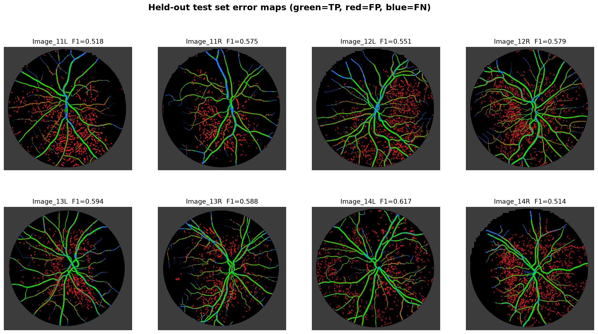
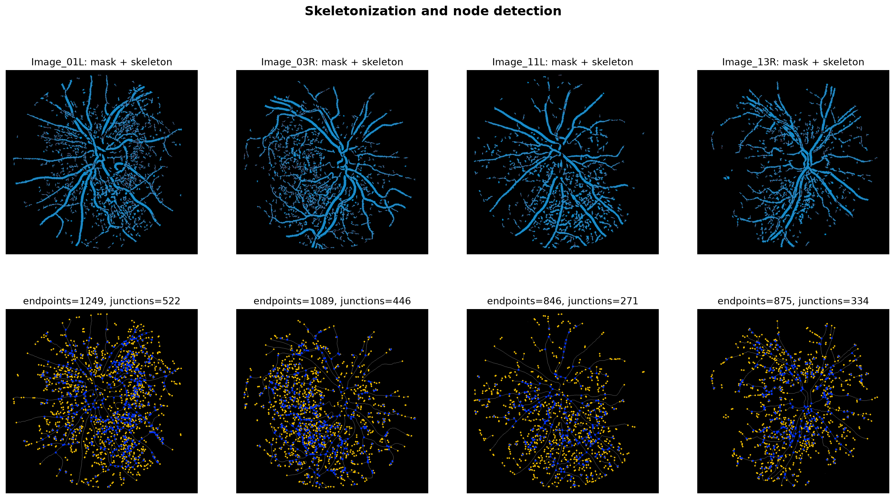
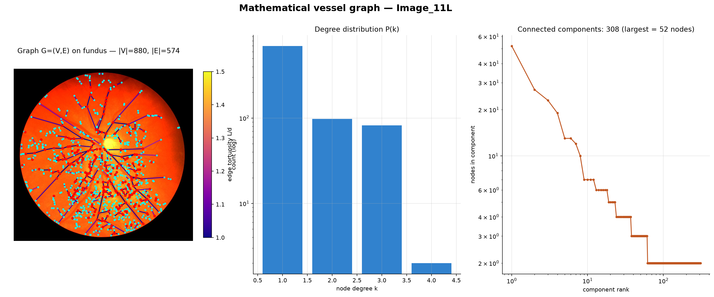
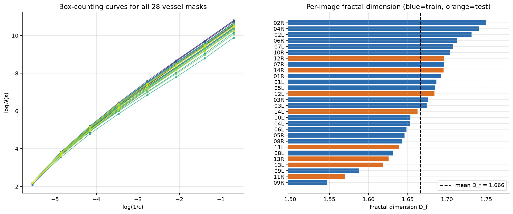
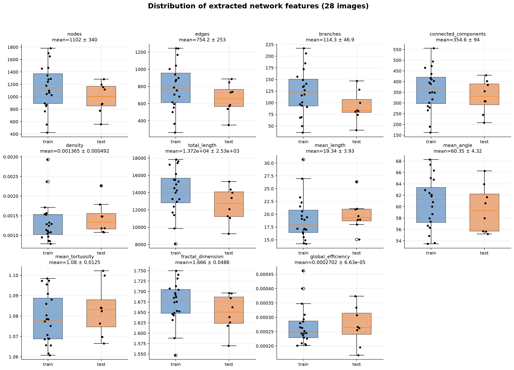
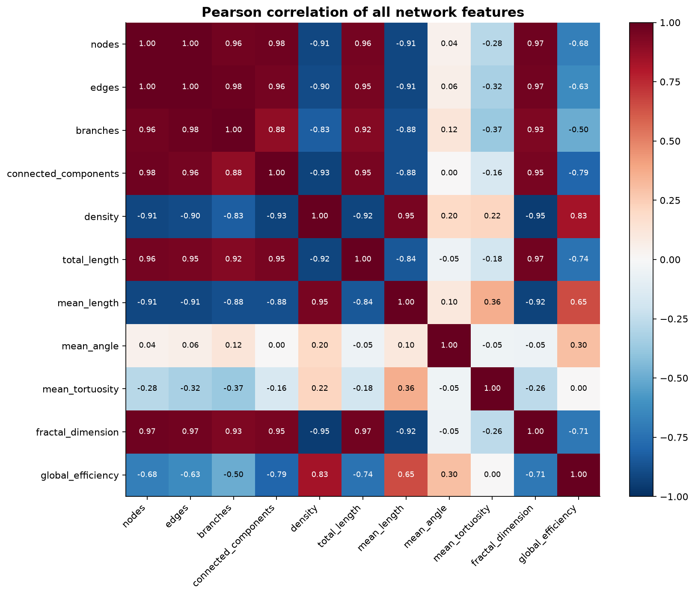
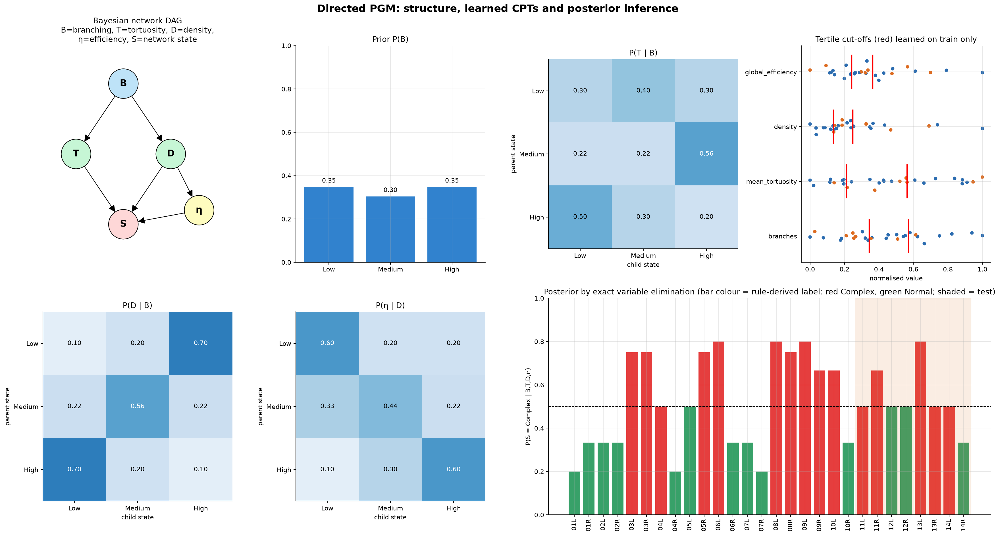
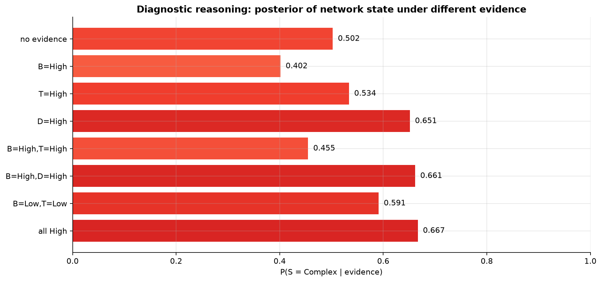
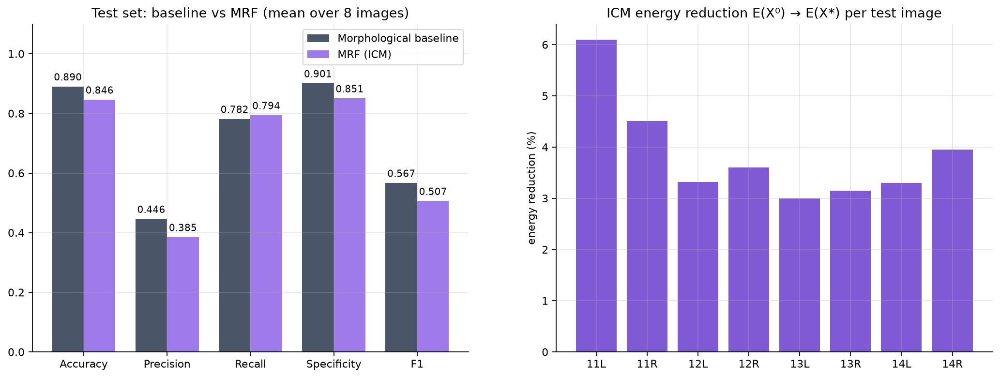
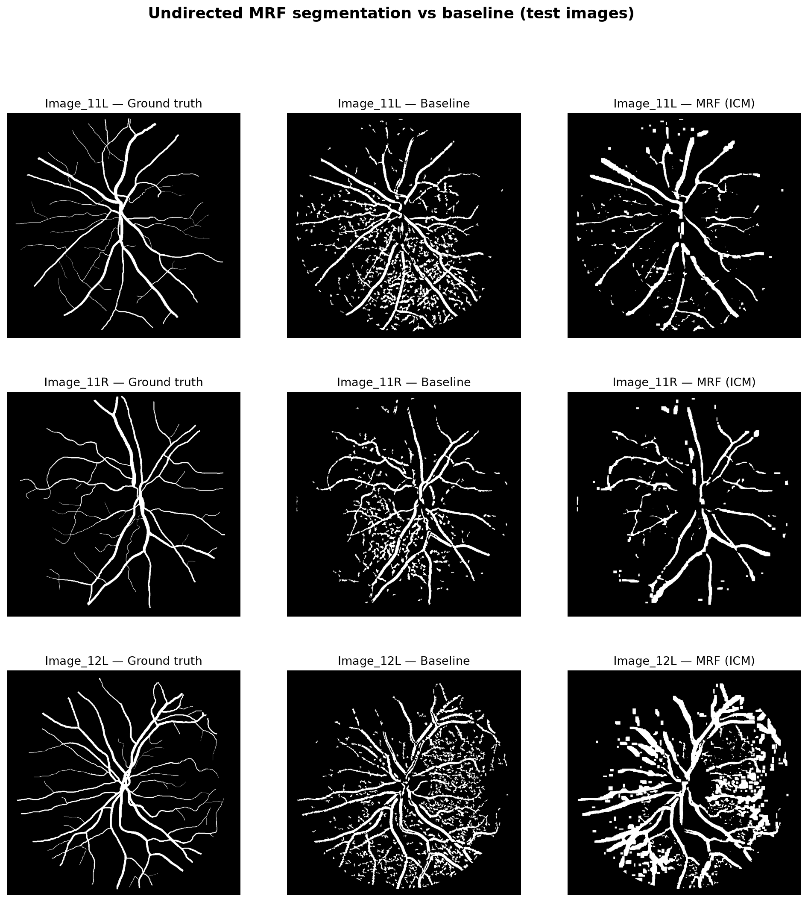

Deep Learning Recall
86.46%
+8.29% over baseline
Graph Fragmentation
354.6 comps
-52.8% via gap bridging
Mean Branch Angle
60.3° ± 3.4°
Murray's law aligned
Bayesian Factorization
∑ P = 1.000000
Non-circular target S
Master Results Dashboard
Unified summary of segmentation validation, graph topology, fractal scaling, and Bayesian inference.
End-to-End Pipeline Transformation Chain
Transformation from raw fundus photography to CLAHE preprocessing, binary mask, difference map, skeleton, and nodes.
Test Set Error Gallery (TP / FP / FN)

Skeleton & Node Detection Gallery

5-Condition Quantitative Ablation Study
Isolating the contributions of the Morphological Baseline, MRA Gabor filterbank, MRF spatial refinement, and Deep Learning.
| Condition |
Accuracy |
Precision |
Recall (Sens) |
Specificity |
F1-Score |
Dice Coeff |
IoU (Jaccard) |
| A: Morphological Baseline |
0.8904 |
0.4464 |
0.7817 |
0.9011 |
0.5670 |
0.5670 |
0.3965 |
| B: MRA (Multi-Scale Gabor) |
0.8470 |
0.3593 |
0.8447 |
0.8468 |
0.5032 |
0.5032 |
0.3370 |
| C: MRF Spatial Refinement |
0.8588 |
0.4042 |
0.7992 |
0.8640 |
0.5263 |
0.5263 |
0.3606 |
| D: Deep Learning Model |
0.8768 |
0.4260 |
0.8646 |
0.8779 |
0.5673 |
0.5673 |
0.3974 |
| E: Full System (DL + MRF) |
0.8053 |
0.3213 |
0.8588 |
0.7994 |
0.4627 |
0.4627 |
0.3036 |
Vascular Network Graph Construction & Fractals
Topological representation G=(V,E) with node degree distributions and multi-scale box-counting dimension.
NetworkX Graph Overlay & Degree Profile

Multi-Scale Box-Counting Fractal Dimension

Vascular Geometric Feature Distributions

Complete Pearson Correlation Matrix

Directed Bayesian Network & Undirected MRF Modeling
Directed Bayesian Network DAG with learned CPTs alongside ICM spatial energy minimization.
Bayesian Network DAG Structure & Learned CPTs

Exact Variable Elimination Posterior Inference

MRF Energy Reduction & Quantitative Comparison

MRF vs Baseline Visual Segmentation

Interactive Figure Explorer
Select any of the 16 publication figures to inspect in full resolution.